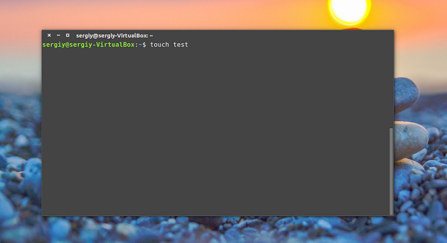

Работа с терминалом Linux
Запуск командной строки
Для запуска командной строки можно воспользоваться одним из следующих способов:
Ctrl+Alt+T;
Alt+F2 – вписать "gnome-terminal";
ПКМ – Открыть в терминале;
Главное меню – Терминал.

Выполнение команд в терминале
Чтобы выполнить команду достаточно написать ее и нажать Enter.
Командная оболочка Bash поддерживает автодополнение, поэтому вы можете написать половину команды, нажать TAB и если на такие символы начинается только одна команда, то она будет автоматически дополнена, если же нет, то вы можете нажать два раза TAB, чтобы посмотреть возможные варианты. Точно такая же схема работает для путей к файлам и параметров команд.
Чтобы выполнить команду можно указать имя ее исполняемого файла или полный путь к нему, относительно корневой или любой другой папки. Важно заметить, что командная оболочка Linux, в отличие от Windows, чувствительна к регистру, а поэтому будьте внимательны при вводе команд и их параметров.
Экземпляр запущенной команды называется процесс. Когда в терминале Linux выполняется одна команда нам нужно подождать ее завершения, чтобы выполнить следующую.
Команды могут выполняться без параметров или же с параметрами, которые позволяют указать данные, с которыми будет работать программа, также есть опции, с помощью которых можно настроить поведение. Большинство стандартных утилит придерживаются такого синтаксиса:
$ команда опции параметр1 параметр2...
Опции часто необязательны и уточняют тот или иной аспект работы программы. Они записываются в форме черточка и символ или двойная черточка и слово. Например -o или --output. Приведем пример для команды ls. Без опций и параметров:
$ is
С параметром, указывающим какую папку посмотреть:
$ is/bin
С опцией -l, вывести в виде списка:
$ is-l
В с опцией и параметром:
$ is-l/bin/
Можно комбинировать две опции:
$ is-la/bin/
Основные команды терминала Linux
- addgroup — добавить новую группу в систему;
- adduser — добавить нового пользователя;
- alias — создание псевдонимов для команды консоли linux;
- apt — поиск, установка и удаление программ в Ubuntu;
- awk — утилита для фильтрации текста на основе регулярных выражений и языка программирования AWK;
- bash — интерпретатор команд Bourne Again Shell, используется по умолчанию в большинстве дистрибутивов Linux;
- cat — вывести содержимое файла;
- cd — изменить рабочую директорию;
- chmod — изменить разрешения для файлов или папок;
- chown — изменить владельца файла;
- clear — очистить вывод терминала;
- cp — скопировать файл или папку;
- crontab — настройка расписаний и заданий планировщика cron;
- curl — передача и получение данных с удаленного сервера;
- cut — обрезать определенную часть каждой строки из файла;
- df — посмотреть общее доступное дисковое пространство в системе;
- du — отобразить занимаемое каждым файлом место на диске;
- echo — вывести строку текста;
- file — вывод типа файла;
- find — поиск файлов в файловой системе по разным условиям;
- history — вывести последние использованные команды linux;
- make — выполнить сборку программы из исходников;
- mv — перемещение файлов и каталогов;
- nslookup — получить информацию DNS об удаленном сервере;
- reboot — перезагрузка компьютера;
- rename — переименовать несколько файлов в Linux;
- rm — удалить файл;
- rmdir — удалить папку;
- touch — создать файл;
- cut — обрезать определенную часть каждой строки из файла;